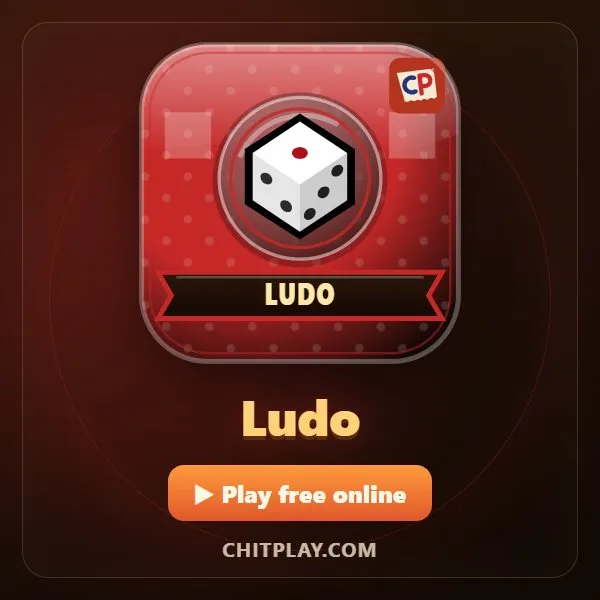
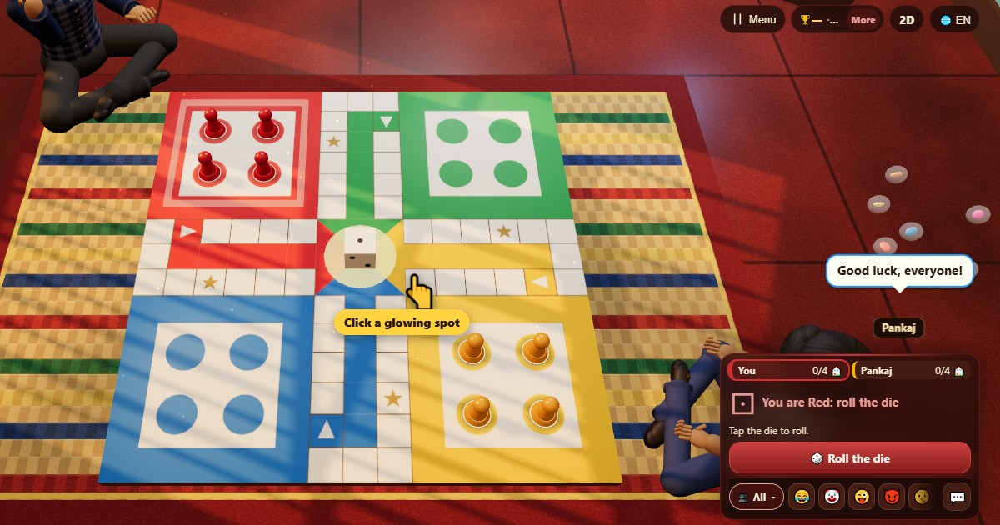
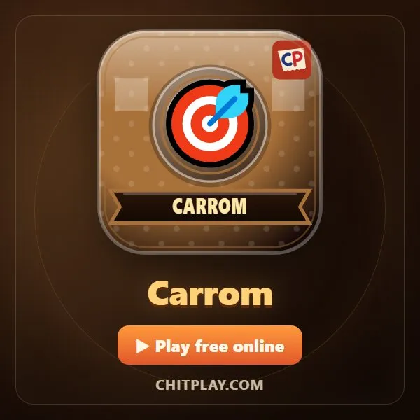
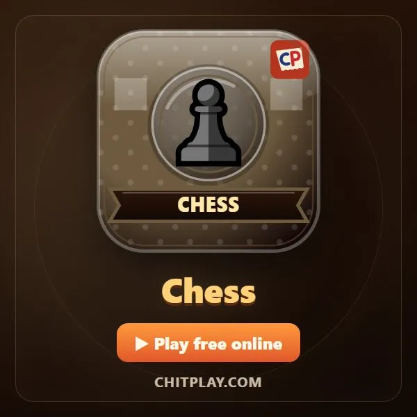
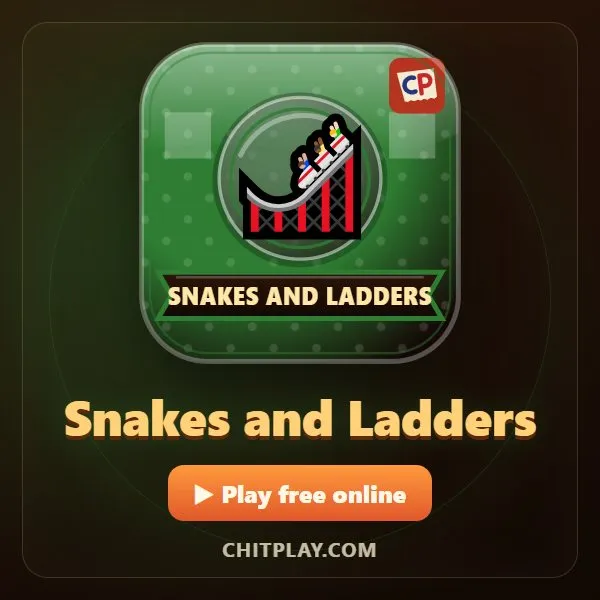
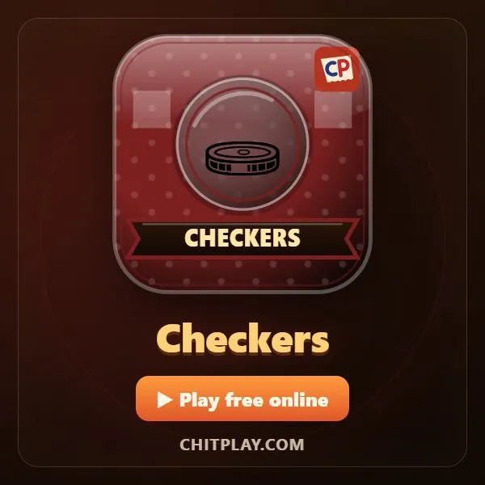
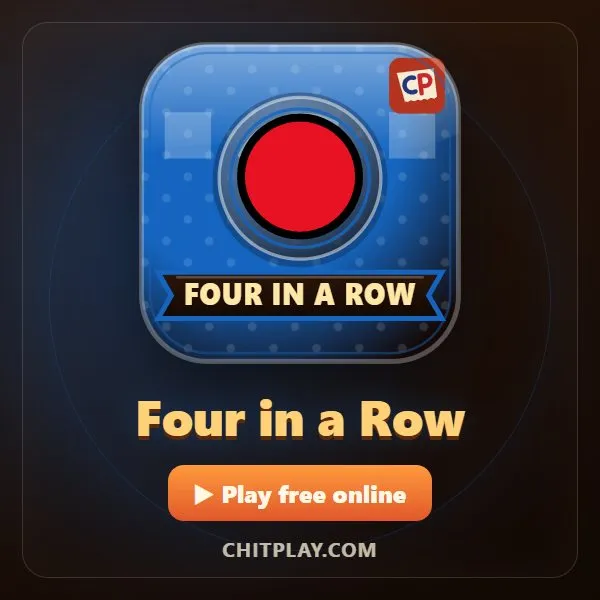
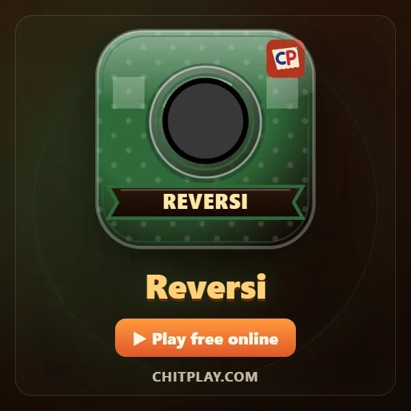
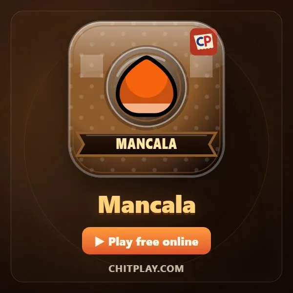
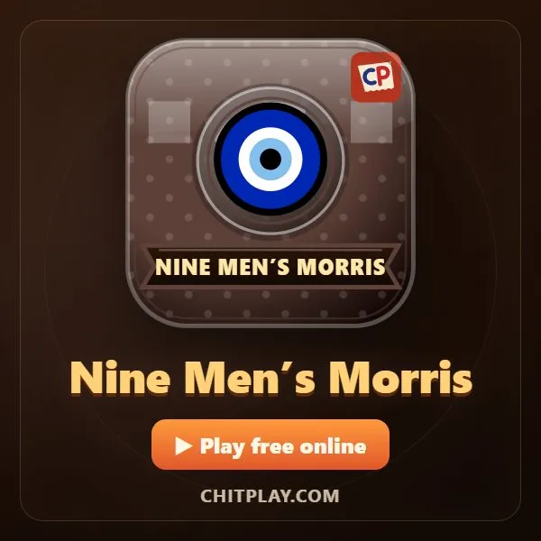

Ludo (Ludo)
- 👥 2–4 giocatori
- Giochi da tavolo
- 🆓
Guida in italiano
Porta a casa le tue quattro pedine. Un sei per uscire e rimanda indietro gli avversari.
English name: Ludo

Come si gioca
- Tocca Tira al tuo turno. Serve un sei per portare una pedina fuori dalla base, sulla tua casella di partenza.
- Tocca una pedina che brilla, o il suo pulsante, per avanzarla del numero uscito. Anche quando può muoversi una sola pedina, la tocchi tu; se nessuna può muoversi, il turno finisce.
- Se finisci su una pedina avversaria, torna alla sua base. Le caselle di partenza e quelle con la stella sono sicure: lì nessuno può essere mangiato.
- Dopo il giro del tabellone, la pedina entra nella tua colonna d'arrivo. Per arrivare a casa serve il numero esatto.
- Un sei, una pedina mangiata e una pedina arrivata a casa danno ciascuno un altro tiro. Tre sei di fila fanno perdere il turno.
Punteggio
Scegli la modalità prima di giocare. In Normale non ci sono punti: la tabella finale mostra le pedine portate a casa da ciascuno. In Punti ogni casella percorsa vale 1, una pedina mangiata 20, una pedina a casa 30, e finire per primo tutte e quattro vale un bonus di 50.
Chi vince
Modalità Normale: vince chi porta a casa per primo tutte e quattro le pedine. Modalità Punti: vince chi ha più punti quando finiscono i 15 round o quando qualcuno porta a casa tutte e quattro le pedine.
Domande frequenti
Cos'è la modalità Punti?
Un modo più breve di giocare: fai punti per ogni casella percorsa, ogni pedina mangiata e ogni pedina a casa, e dopo 15 round vince chi ha più punti, anche senza aver portato a casa tutte le pedine.
Serve un sei per iniziare a Ludo?
Sì. In ChitPlay una pedina esce dalla base solo con un sei, la regola più diffusa, e il sei dà anche un altro tiro. Il Ludo è parente stretto del Non t'arrabbiare.
Cosa succede con tre sei di fila?
Il turno finisce subito e il terzo sei non si gioca.
Si può giocare a Ludo in due?
Sì. In due vi sedete negli angoli opposti, così avete lo stesso percorso.
Modi di giocare
- Come ospite: Niente registrazione né accesso. Scegli un nome e gioca subito.
- Contro il computer: Se non c'è nessuno, i giocatori del computer occupano i posti liberi. Facile, normale o difficile.
- Online: Siediti a un tavolo pubblico con giocatori di tutto il mondo.
- Con gli amici vicini: Crea la partita su un telefono e condividi il codice o il QR. Gli amici entrano dal loro telefono.
- Su un solo telefono: Passatevi il telefono a turno: basta un dispositivo per tutta la famiglia.
Altre lingue
- हिन्दी: लूडो
- Hinglish: Ludo
- Español: Ludo (Parchís)
- Português: Ludo
- Français: Ludo (petits chevaux)
- Deutsch: Ludo
- Bahasa Indonesia: Ludo
- Türkçe: Ludo (Kızma Birader)
- 日本語: ルドー
- 한국어: 루도
- 中文: 飞行棋（鲁多）
- Русский: Лудо
- اردو: لوڈو
- नेपाली: लुडो
- বাংলা: লুডু
- English: Ludo · Regole complete (inglese)
Idee di giochi
- Giochi da fare a casa
- Giochi da fare con gli amici
- Giochi in casa per tutta la famiglia
- Giochi per 4 persone
Tutti i giochi

Carrom
Scacchi
Scale e serpenti
Dama
Quattro in fila
Reversi
Mancala
Filetto (mulino)
In ChitPlay non ci sono soldi veri, scommesse o premi. I punti non hanno valore.